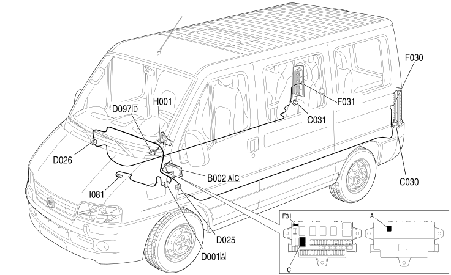

E2022 REVERSING LIGHTS LOCATION COMPONENTS
- Path
- Electrical equipment > 1 ELECTRICAL FUNCTIONS > E20 EXTERIOR LIGHTING > E2022 REVERSING LIGHTS > E2022 REVERSING LIGHTS LOCATION COMPONENTS
- Kind
- topic
- Applies to
- engines: 2.8 JTD 8V; all production periods
- Interactive page
- https://sloeber94.github.io/elrnDB-fDct/en/#/244001651
Applies to: engines: 2.8 JTD 8V; all production periods
Location Components

Component code | Description | Reference to the assembly |
|---|---|---|
JUNCTION UNIT UNDER DASHBOARD | - | |
LEFT REAR EARTH | - | |
RIGHT REAR EARTH | - | |
FRONT/DASHBOARD COUPLING | - | |
DASHBOARD/LEFT REAR COUPLING | - | |
DASHBOARD/RIGHT REAR COUPLING | - | |
SHORT CIRCUITING COUPLING | - | |
FRONT/REVERSING SWITCH BRIDGE COUPLING | - | |
LEFT REAR LIGHT CLUSTER | ||
RIGHT REAR LIGHT CLUSTER | ||
REVERSING LIGHTS SWITCH | - | |
MULTIFUNCTION SWITCH ON GEARBOX | - | |
- | ||
- | ||
- | ||
- | ||
- | ||
- |
Topics linked from this page (12)
- B002 JUNCTION UNIT UNDER DASHBOARD
- C030 LEFT REAR EARTH
- C031 RIGHT REAR EARTH
- D001 FRONT/DASHBOARD COUPLING
- D025 DASHBOARD/LEFT REAR COUPLING
- D026 DASHBOARD/RIGHT REAR COUPLING
- D097 SHORT CIRCUITING COUPLING
- D187 FRONT/REVERSING SWITCH BRIDGE COUPLING
- F030 LEFT REAR LIGHT CLUSTER
- F031 RIGHT REAR LIGHT CLUSTER
- I020 REVERSING LIGHTS SWITCH
- I081 MULTIFUNCTION SWITCH ON GEARBOX